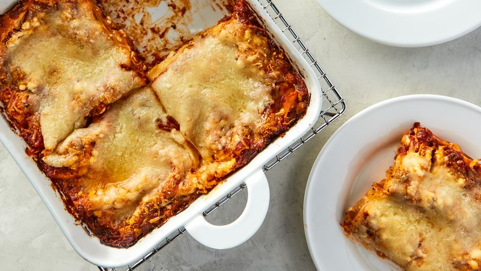

Lasagna

Description
Lasagna is a type of pasta, possibly one of the oldest types, made of very wide,
flat sheets. The dish may be topped with grated cheese, which becomes melted after
baking. Typically, cooked pasta is assembled with the other ingredients and then baked
in an oven. The resulting casserole is cut into single-serving square portions.
Ingredients
- 1 clove garlic
- 1/2 pound of ground beef
- 1 teaspoon Italian seasoning
- 1 cup spaghetti sauce
- 6 purchased precooked or oven=ready lasagna noodles (each about 7x3 inches)
- 1 container (12 ounces) reduced-fat cottage cheese (1 1/2 cups)
- 1 cup shredded mozzarella cheese (4 ounces)
- 2 tablespoons grated Parmesan cheese
Step-by-step
- Heat the oven to 400 degrees. Peel and finely chop the garlic. Cook the beef and
garlic in the skillet over medium heat about 5 minutes, stirring occasionally,
until the beef is brown; drain.
- Stir the Italian seasoning and spaghetti sauce into the beef. Spread 1/4 cup of the
beef mixture in the ungreased square pan.
- Top with 2 noodles, placing them so they do not overlap or touch the sides of the pan
because they will expand as they bake. Spread about 1/2 cup of the remaining beef mixture
over the noodles.
- Spread about 1/2 cup of the cottage cheese over the beef mixture. Sprinkle with about
1/3 cup of the mozzarella cheese.
- Repeat layering twice more, beginning with 2 more noodles and following directions
in steps 3 and 4. Sprinkle with the parmesan cheese.
- Cover with aluminum foil and bake 30 minutes. Carefully remove the foil, and continue
baking about 10 minutes longer or until lasagna is bubbly around the edges and looks very
hot. Let stand 10 minutes, so the lasagna will become easier to cut and serve.